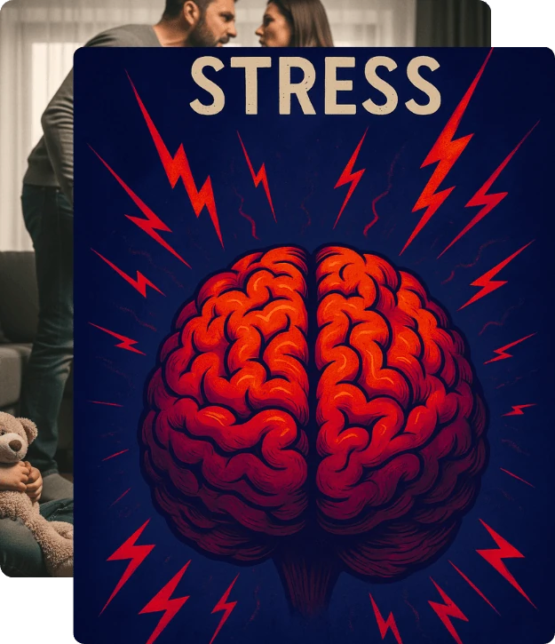
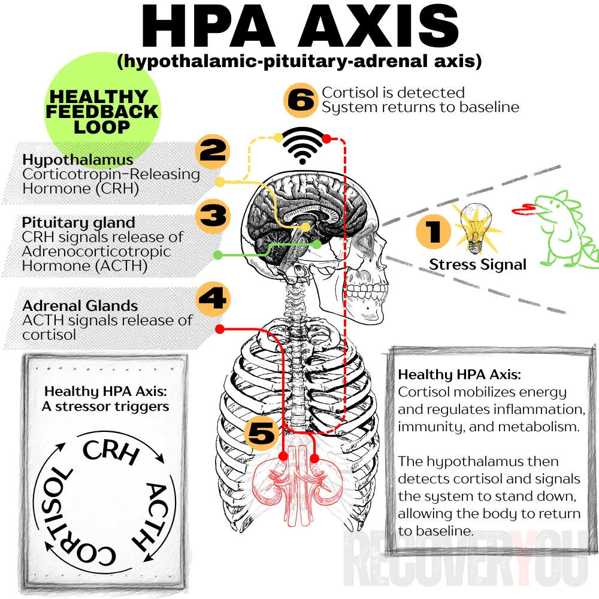
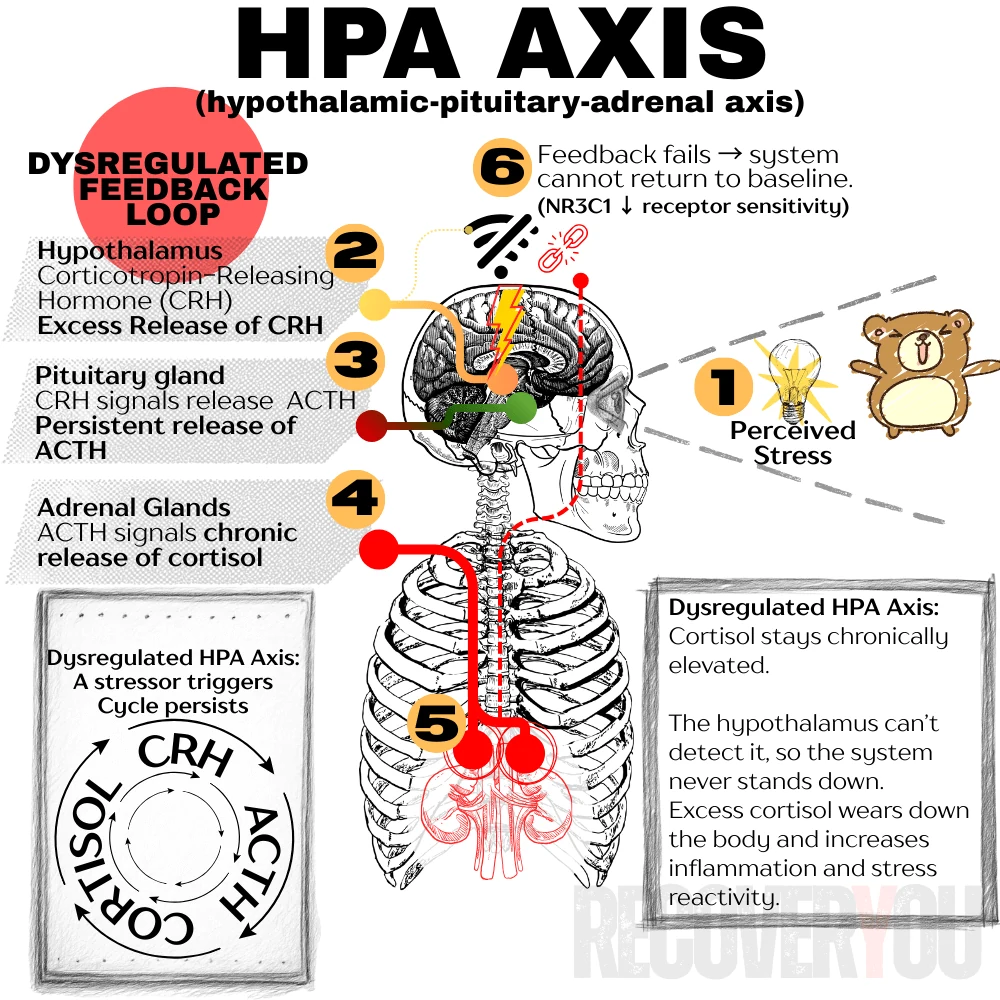

Positive Stress
Brief, manageable stress that comes with support and resolution: trying something new, getting a vaccine, starting school. The system activates, then resets. This is how resilience is built.
The Paradox of Survival
Toxic stress is the prolonged or repeated activation of the body's stress response without enough support to recover from it. Unlike ordinary stress, which spikes and then resets, toxic stress keeps the nervous system stuck in survival mode, gradually reshaping the brain, hormones, and body. In adults, it is closely linked to anxiety, chronic illness, and a heightened vulnerability to addiction.
When childhood adversity goes unmet by adequate support, it doesn't just leave emotional scars. It rewrites the brain's operating system. What should have been wired for growth gets rewired for survival. A young brain, flooded with stress hormones, adapts to a constant state of alarm. This is toxic stress: the unseen architect of a nervous system built for war, not for peace.
And here's what most people miss: this isn't some dusty childhood relic we leave behind. It travels forward. A live wire running through adult life. Through the inexplicable impulsivity. The shutdowns that arrive without warning. The vulnerability to addiction that feels like a life sentence with no mechanism for appeal.
Here's the part rarely explained in recovery circles: when the autonomic nervous system, the body's automatic pilot for heart rate, breathing, and digestion, gets stuck in chronic dysregulation, it becomes part of what keeps the suffering going. The system designed to bring you back to baseline can no longer do that job reliably. Relief stops arriving on its own. It has to be found somewhere else.
That is why the nervous system starts hunting for substitutes. Substances can stop feeling optional and start feeling necessary. Not because you are weak, but because your biology is trying to find relief with whatever is available.
With what we now know from psychology and neuroscience, toxic stress offers one of the clearest lenses for understanding trauma-born addiction. For someone carrying both severe addiction and a trauma history, finding a framework that finally makes sense of their experience can be life-changing.
I know this because I lived it. Sobriety without addressing the trauma underneath did not bring peace. It magnified the chaos. I never dared admit it then, but being sober with an unhealed nervous system felt worse than using.
Worse meant self-hate. With the buffer gone, I was left sitting with the consequences of my actions and the pain I had caused. My body was in revolt too. The sickness in my stomach. The twisting anxiety. Constantly cold hands and feet. Hands that shook violently.
As awful as those symptoms were, they paled beside the war of attrition occurring in the grey matter. Shame over every choice. Regret. The belief that I was not fixable, that there were wires crossed somewhere in my soul with no way to correct them. I knew in my bones that sobriety and recovery were for other people. Never for me. I believed addiction would claim me eventually.
Being alone with my thoughts was a special kind of hell. I had to keep moving or at least stay distracted. Television, music, games, anything. Never silence. Anything but that.
The first crack in that belief came when I watched Dr. Nadine Burke Harris's TED Talk on ACEs. It was my first real aha moment, the one that set everything else in motion. For the first time, I could see that what I was experiencing might have an explanation beyond moral failure.
Healing did not begin because the consequences disappeared. It began when I understood the machinery underneath them. Toxic stress was wiring I never asked for, doing what it had learned to do. That knowledge did not absolve me of responsibility. It gave me somewhere real to begin.

Stress is supposed to rise and fall. The body mobilizes, then resets. Toxic stress develops when that reset repeatedly fails and the stress systems remain switched on.
Key brain regions affected:
These systems don't operate in isolation. When the hippocampus can no longer place experience in time, the stress response stays active as if the threat is still happening, even when it isn't.
The cumulative wear and tear created by this imbalance is called allostatic load. Instead of growth, the brain prioritizes vigilance. The autonomic nervous system is central here. The sympathetic branch remains overactive, the parasympathetic branch underfunctions, and the system that should restore calm never fully engages.
Toxic stress doesn't just shape emotions. It wears down the body. Research links it to heart disease, diabetes, autoimmune conditions, and shortened lifespan. This is allostatic load made visible.
In children, the line between healthy and toxic stress often comes down to a reliable buffer: a caring, attentive adult who helps regulate the child's nervous system and turn off the alarm. Meeting new people, starting school, or falling off a bike are normal developmental stresses the brain can learn from when safety and comfort follow. Without that buffer, or when the caregiver is the source of fear, the child has no reliable way to reset. Safety never arrives. The body stays on high alert. The brain wires for survival instead of growth.
Even one consistent, supportive adult can change this trajectory. Safety doesn't erase trauma. But it reshapes how the brain organizes itself around it.
People often talk about stress as if it were a single test of how well you cope. Developmental science identifies three distinct categories. The difference is not simply willpower or temperament. It is whether a reliable buffer is present when the alarm goes off.
Safety. Support. Someone who helps the system turn back off. When that buffer is present, stress builds capacity. When it's absent, when the alarm activates and nothing answers it, the body draws a different conclusion: stay ready. The danger isn't over.
Once you understand these three types, a lot of the confusion dissolves. You stop asking “what's wrong with me?” and start seeing what actually happened: a stress response that adapted so completely it forgot how to stop.
Brief, manageable stress that comes with support and resolution: trying something new, getting a vaccine, starting school. The system activates, then resets. This is how resilience is built.
More intense adversity: loss, injury, major disruption, that can still be recovered from when consistent emotional support is present. The response spikes hard, but it gets help finding its way back down.
Strong, frequent, or prolonged stress without adequate buffering. The danger may be overt, or it may be chronic neglect, instability, unpredictability, or simply the permanent absence of someone who helps the alarm turn off. The key feature is that the system doesn't shut down. Over time, survival becomes the default, not a response to a moment, but a permanent operating mode.
The diagrams below show the core stress circuit at the center of trauma, anxiety, and addiction: the HPA axis (hypothalamic-pituitary-adrenal system). Its job is simple: detect threat, release stress hormones, and bring the body back to baseline once the danger has passed.
The healthy frame shows it working. A stressor appears. The brain triggers a brief hormonal cascade. Cortisol is released. The brain detects that cortisol and shuts the system back down. A clean, elegant loop designed for short bursts of survival.
The dysregulated frame shows what happens when chronic stress or early adversity breaks that loop. The hypothalamus fires too easily. The pituitary over-releases ACTH. Cortisol stays high instead of settling. The feedback signal that should quiet the system begins to fail. Over time, constant activation reshapes the brain, heightens inflammation, and leaves the body stuck in survival mode.
Switch between them and watch what moves. The difference between a nervous system that can return to calm and one that cannot. For many people with trauma histories, this was never a personality flaw. It was physiology.
Choose a state to compare — the diagram swaps in place

Healthy HPA axis — the loop closes. Cortisol is detected, and the system is told to stand down.

Dysregulated HPA axis — the loop stays open. Cortisol stays elevated and the brain can no longer detect the signal to stop.
In short bursts, cortisol is useful, necessary, even. It mobilizes energy, sharpens threat detection, and temporarily suppresses everything non-urgent: inflammation, digestion, reproduction. Your body's operating on a single directive: emergency now, maintenance later. That logic works fine for a sprint. The damage comes when the sprint becomes a marathon.
None of these are malfunctions. They're adaptations: the brain doing exactly what it was trained to do in an environment it believed was permanently dangerous.
Hippocampal shrinkage (context, memory, braking). PFC weakening (regulation). Amygdala sensitization (alarm), all at once. The dopamine system goes quiet underneath it. That's not a collection of separate problems. It's a single, unified setup that increases vulnerability to trauma-driven addiction.
Up to this point, the page has focused on the science of toxic stress and how prolonged activation reshapes the brain, nervous system, and body over time.
The next section shifts. It moves from biology into lived experience, using illustrative examples of psychological and relational harm to show where the science lands in the body. Some of it will be recognizable. That's intentional.
The language draws from lived experience while reflecting patterns many people may recognize. The purpose is not to reduce trauma to one person's story. It is to name what often goes unnamed.
If the material becomes overwhelming at any point, pause or step away. That's not avoidance. That's regulation, and regulation is exactly what this page is about.
Two different childhoods. Two different injuries. One identical conclusion in the body.
A small child stands trembling before the very person meant to protect them. Something breaks in the caregiver: rage, desperation, a darkness they can't outrun, and a line gets crossed that can never be uncrossed. They both feel it. The child's body knows before their mind does, stomach dropping, throat tightening, breath coming in shallow, urgent bursts. They don't know what just happened. They don't have a word for it. They only know that something that was supposed to be safe has become the most dangerous place in their world, and that safety, the thing that was supposed to live here, is gone.
Then come the commands:
Alone now. Shame, fear and confusion twist together as the child curls on the edge of the bed, small hands gripping their knees, trying to take up less space than they already do. Waiting for someone, anyone, to come. To explain. To hold them. To say it's finished. But the only possible source of comfort is also the source of the pain. No one comes. Minutes stretch into hours. Hours into morning. The alarm never shuts off.
Forced to make sense of it alone, the child's body writes a rule that will travel with them for years: “I am alone in danger.” The brain wires for vigilance and self-blame, not because something is wrong with the child, but because that conclusion was the only one available.
In another version of that same night, the caregiver eventually returns. The anger is gone, replaced by a confusing tenderness. An apology, maybe. Tears, perhaps. I love you. I didn't mean it. The child desperately wants to believe them. Does believe them, because they have no other option. But the body doesn't follow. The small shoulders stay hunched. The breath doesn't fully return.
The person who caused the pain is now the one offering comfort. The message lands in the nervous system as permanent contradiction: love is unpredictable. Safety can vanish without warning, and return without explanation.
A small child sits in a quiet room, an invisible antenna raised, scanning the silence. Their body is entirely still, a held breath, a subtle brace in the shoulders, a tightness around the eyes that has no name yet. They are waiting. Not for a sound, but for a signal: proof of their own existence.
Somewhere in the house, the parents move about, yet even in their presence, the child is entirely alone.
A plea goes out, a drawing left carefully on the table, a tower of blocks built where it will be seen. A biological imperative: be seen, be met, be answered. Serve-and-return. But what comes back is serve-and…nothing. No anger. No warmth. Just a silence that lands with the full weight of a slammed door.
The child's body registers the impact without having language for it: stomach clenching, a cold prickle across the skin, the specific hollow of a need that sent out a signal and received nothing back. Safety is not gone. It was never there to begin with.
Alone with the echoing non-event, the small brain, desperate for a rule, any rule, that makes the world predictable, concludes the only thing available to it: my needs are the problem. To be safe, I must not have them.
One child implodes. They learn to shrink, to vanish, to take up as little space as possible. Joy and pain both get turned down to whispers. The heart rate lowers, not from calm, but from collapse. Safety through self-erasure. Disappearing as a survival strategy.
Another explodes. They learn that chaos is the only way to make a shape in the void. They get louder, bigger, harder to manage, a body-level scream for contact. Attention proves existence. Even angry attention is oxygen. They become the “problem child”, not because something is wrong with them, but because they found the only strategy that sometimes worked.
The source of survival, the parent, is also the source of the void. The message lands as contradiction: connection requires self-abandonment. Being seen requires becoming someone other than who you are.
Both paths lead to the same scar. One bruises the body. The other starves the spirit. Whether through chaos or neglect, the nervous system learns the same lesson: love is conditional, safety uncertain, and survival depends on staying alert.
Here lies the cruel symmetry of trauma: visible harm and invisible absence converge in the body's wiring. What is never named as abuse still registers as threat, keeping the alarm running long after the danger has passed.
This is the key: repeated fear or disconnection without resolution is where the psychological meets the physiological. What is later dismissed with a casual “just get over it” may already have shaped a body to survive what it was never meant to endure.
This is how physical trauma rewires us, and how neglect becomes its own form of violence: quiet, cumulative, devastating. This is the engine of toxic stress.
Sometimes the deepest wound is not only the trauma itself, but the relationship it happens inside.
A stranger can harm you and leave terror behind. But when the harm comes from a parent, caregiver, partner, or trusted loved one, the injury carries another layer. The person who should represent safety becomes part of the danger. The person the child may need for comfort, food, shelter, protection, and identity may also be the person creating the fear, or failing to stop it.
This is where attachment becomes complicated. A child cannot simply walk away from the person they depend on. So the nervous system is forced into a brutal contradiction: recognize the danger clearly and risk losing the attachment, or preserve the attachment by minimizing, excusing, compartmentalizing, forgetting, or blaming themselves for what happened.
That does not make the trauma less real. It makes the survival strategy more understandable. The child may accept the apology. They may run back toward the same person who hurt them. They may bury the truth, soften it, explain it away, or turn the blame inward because attachment is not optional to a child. Attachment is survival.
Betrayal trauma theory offers one lens for understanding this paradox. I am not presenting it as a perfect explanation for every survivor's experience. I am offering it as a useful theory, and a painfully important dynamic to consider: sometimes trauma does not only teach the body that the world is unsafe. It teaches the child that love, danger, comfort, and betrayal can all wear the same face.

In this installment of the ACEs Aware Storytelling Series, Dr. Burke Harris explains how the body's stress response becomes toxic in the face of early adversity, and outlines evidence-based practices that support regulation and resilience.
Dr. Burke Harris maps the path from early exposures to the chronic activation of the nervous system, showing how repeated danger not only shapes behaviour, but rewires the brain, hormonal systems, and immune system.
Even when the stress response has been running in high gear for years, there are evidence-based ways to recalibrate it. The practices she highlights, from mindfulness to healthy relationships to consistent regulation habits, are accessible and within reach.
This is not only about childhood trauma. It is about understanding how hidden stress becomes toxic, how it can contribute to physical illness, and why recovery must include the nervous system.
High doses of adversity in children actually change the way their brains develop … their immune systems, their hormonal systems, and even the way their DNA is read and transcribed.
Dr. Nadine Burke Harris
This is the missing piece: relief can feel categorically different when you live in survival mode.
That contrast can be difficult to explain to someone who has always had some access to calm. For one person, the substance feels good. For another, it can feel like the sudden arrival of something that has been missing for years, perhaps for a lifetime. The brain does not simply record, “this feels good.” It can learn something far more powerful:
“This isn't just pleasure. This is safety. This is peace. This is connection. This is acceptance. This is love. This is whatever I have been missing, even if I never had a name for it.”
When relief feels like all of those things at once, the fact that it is synthetic can seem almost irrelevant. You may not know exactly what has been missing. You only know that this, whatever this is, is the closest your body has come to quiet.
Chronic stress can blunt dopamine sensitivity and diminish the capacity for joy, motivation, and connection. Substances can overwhelm that circuit with an artificial surge. That is why they may not feel like recreation. They can feel like relief. Sometimes like salvation. For a nervous system unfamiliar with calm, the distinction can become dangerously thin.
Substances do more than “feel good.” They can temporarily do what the autonomic nervous system is struggling to do: bring the body down from the ledge and provide a counterfeit form of regulation. Addiction becomes less about chasing a high and more about chasing a nervous-system reset. That is why trauma-born addiction can feel so biologically compelling. It becomes a learned solution to an unbearable allostatic load. It works, until the cost of the solution exceeds the cost of the problem.
This wiring is powerful, but it is not permanent. The brain can change when it receives what it lacked: safety, tools, and support. Neuroplasticity means the same brain that learned survival can also learn to settle and build new patterns that support sobriety.
For many of us, myself included, recovery isn't about returning to some stable self that existed before the damage. There is no before to go back to. It's about building something that was never there. That's harder, stranger, and more disorienting than anyone tells you. It's also more real.
That's what makes healing confusing, frightening, disorienting, and profoundly courageous.
So where do you begin? Not with perfection. Not by erasing the past. You begin with noticing. The next time you feel keyed up or shut down, pause long enough to name it: “This is my nervous system doing its job.” That simple act of awareness is the first step toward giving it a new one.
Does this page describe something you've felt but never had words for?
If so, you're not broken. You've adapted.
And if you've adapted once, you can do it again.
If this page brought something up, perhaps recognition, grief, or anger you could not name before, that does not mean you have gone somewhere wrong. It may be what happens when something that lived wordlessly in the body finally gets a name.
Understanding toxic stress doesn't ask you to forgive the past, minimize it, or rush toward anything. It asks something quieter: that you consider the possibility that what happened to you was real, that your responses to it made sense, and that the version of you who survived was doing the only thing available.
You were not broken. You were trained, biologically, relentlessly, without your consent, to survive in conditions where safety was scarce or absent. Substances worked not because you were weak, but because they solved a real problem your body couldn't solve on its own.
That truth is not easy to sit with. But it is honest. And honest is where recovery actually starts.
When survival is understood, it can be renegotiated.
When the nervous system is seen clearly, it can be rewired deliberately.
When the story finally makes sense, recovery stops being a mystery. It becomes a direction you can actually move in.
For many of us, there is no stable baseline waiting underneath the chaos. Peace isn't a place we return to. It's something we build, slowly, with evidence, in a nervous system that is learning for the first time that it's allowed to rest. The process is not linear. It is not fast. But it is possible.
Recovery stops being a moral struggle the moment it becomes a biological negotiation you finally have the tools to act on.
Follow the next step in order, or branch out into related topics.
These references support the scientific and clinical concepts of toxic stress, allostatic load, neurobiology, and the link between childhood adversity and addiction. They are for educational context, not medical advice.